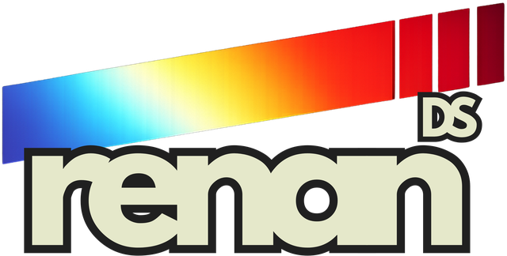
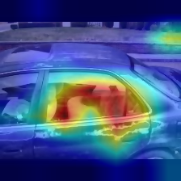
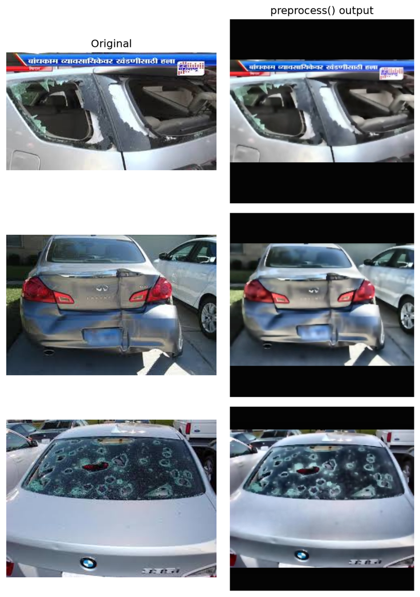
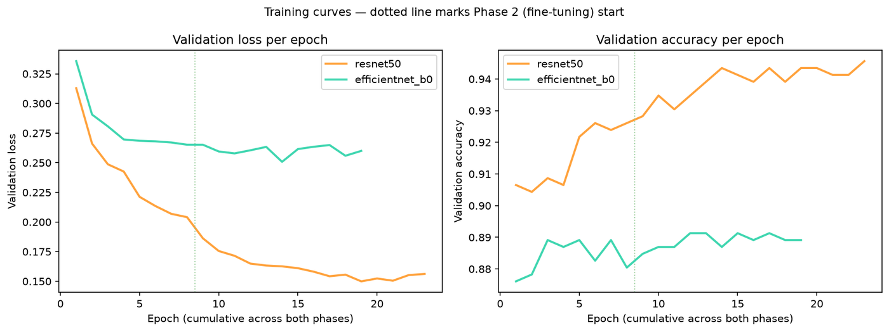
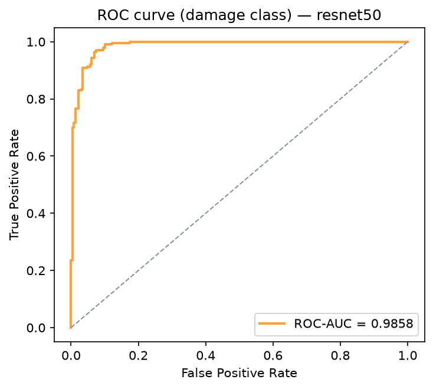
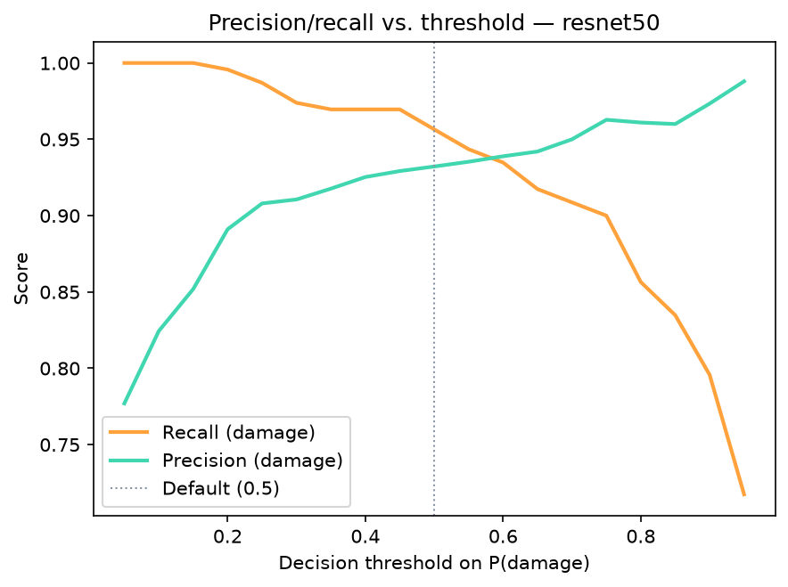
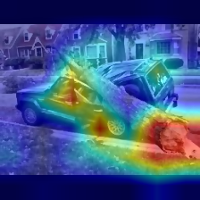
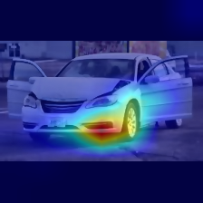
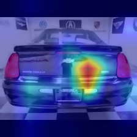
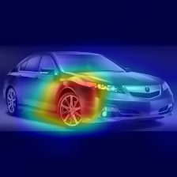

ClaimSightClaimSight is a binary vehicle-damage classifier for auto-insurance claim triage — from a deterministic ingestion pipeline through Grad-CAM explainability to a served FastAPI endpoint. It's a decision-support tool, not an autonomous adjuster: every flagged claim still routes to a human reviewer.

Real overlay, unedited — coarse activation map, not a pixel-level segmentation mask (see §06).
Every submitted claim arrives with photos that need a first visual pass before an adjuster estimates repair cost. That pass is slow, inconsistent across reviewers, and adds latency before the customer hears anything back.
A lightweight binary pass routes obviously-intact vehicles away from the review queue and flags damaged ones with a visual cue — it never approves or denies a claim.
A damaged car missed by the classifier (false negative) is far more costly than a false alarm. Recall on the damage class is prioritized over raw accuracy.
The decision threshold is tuned against that cost asymmetry, not chosen purely to maximize a statistical score — and the trade-off is measured and documented in §05, not hidden.
preprocess() function. Zero train/serve skew.The same deterministic transform runs in training, evaluation, and the live API — so the tensor a model was trained on and the tensor it sees in production are built by identical code, not two implementations that drift apart.
Kaggle dataset pull (anujms/car-damage-detection) into a fixed folder layout — idempotent, re-runnable without duplication.
BGR→RGB, aspect-preserving letterbox resize to 224×224, bilateral filter, CLAHE on the L-channel (LAB).
Albumentations transforms, applied strictly after the shared step, and only on the training split.
ImageNet mean/std, fixed seeds, pinned requirements.txt for reproducibility.
The identical function is imported into the FastAPI handler — same bytes in, same tensor out.
src/preprocessing.py is imported by both src/dataset.py (training/evaluation) and app/main.py (serving). There is exactly one code path that turns an image into a model input — nothing is reimplemented for serving. Verified by an automated determinism test in tests/test_preprocessing.py.

Real output of src/preprocessing.preprocess() on three validation images — from notebooks/01_eda.ipynb.
Source: Kaggle — anujms/car-damage-detection. Images are organized into training/ and validation/, each split into 00-damage and 01-whole.
Real counts from src/ingestion.dataset_summary() — not model output.
| Split | 00-damage | 01-whole |
|---|---|---|
| Training | 920 | 920 |
| Validation | 230 | 230 |
Perfectly balanced within each split — no class weighting needed in the loss function. Verified programmatically during ingestion (notebooks/01_eda.ipynb).
No masks or bounding boxes are provided. This is a hard constraint that shapes the explainability approach (§06 — Grad-CAM as weak localization) and the future segmentation roadmap (§10).
Transfer learning from ImageNet weights, compared head-to-head across two architectures with the identical two-phase training protocol, same seed, same data.
Deeper residual backbone. Selected as the deployed model — see comparison below.
Lighter compound-scaled backbone. Underperformed ResNet50 by ~5.6 points on this dataset size — plausibly because 1,840 training images favor ResNet50's more mature ImageNet1K_V2 transfer weights over EfficientNet's compound-scaling advantage, which tends to show up at larger data scale.
Only the classification head is trained (8 epochs, lr 1e-3); convolutional weights stay frozen to adapt quickly without disturbing pretrained features.
The final convolutional block is unfrozen and trained at a reduced learning rate (15 epochs, lr 1e-5), with ReduceLROnPlateau, early stopping (patience 5), and checkpoint selection by lowest validation loss.

Real training curves from outputs/history/. Dotted line marks the Phase 2 (fine-tuning) boundary — both curves visibly improve once the last block unfreezes.
Every number below is computed by src/evaluate.py on the 460-image held-out validation split for the deployed model (ResNet50) — raw JSON in outputs/metrics/metrics_resnet50.json.
The FN cell is flagged because a missed damage claim is the most expensive error in this workflow (§01). 10 of 230 damaged vehicles were missed at the default threshold.

Threshold tuning, business trade-off: lowering the decision threshold from 0.50 to 0.25 raises damage recall from 95.7% to 98.7% (missed claims drop from 10 to 3 of 230) at the cost of precision falling from 93.2% to 90.8% (false alarms rise from 16 to 23). In this workflow that trade is favorable: a false positive costs one extra human review; a false negative can wrongly close a legitimate claim.

Grad-CAM (via pytorch-grad-cam) is computed on the last convolutional layer and rendered as overlays for both correct and incorrect predictions, across both classes — partly to check the model isn't relying on shortcuts like watermarks or backgrounds.
| Grad-CAM (used here) | True segmentation (roadmap) | |
|---|---|---|
| Output | Coarse activation heatmap | Pixel-level mask |
| Source | Gradients of a classifier | Dedicated annotation |
| Requires | Nothing beyond class labels | Masks / polygons per image |
| Metric | Qualitative inspection | IoU / Dice |
The dataset has no masks or bounding boxes, so Grad-CAM is used honestly as a weak, post-hoc localization signal for triage review — never described in this project as segmentation. True pixel-level segmentation is scoped as a separate future phase (§10), with its own dataset and metrics.




Honest shortcut-learning check: in several false negatives the heatmap concentrated on the wheel or headlight rather than the damaged panel, and in one false positive the model flagged a pristine showroom photo — likely reacting to reflections and a checkered dealership floor absent from most training images. Both are documented as real limitations (§10), not smoothed over.
Served with FastAPI + uvicorn, containerized via the included Dockerfile for any host. Includes an interactive Streamlit demo (streamlit_app.py) that runs the same code locally — streamlit run streamlit_app.py. The trained model itself is published to the Hugging Face Hub with a full model card documenting intended use and limitations.
{
"status": "ok",
"model": "resnet50",
"device": "cuda"
}
{
"prediction": "00-damage",
"confidence": 0.89,
"probabilities": {
"00-damage": 0.89,
"01-whole": 0.11
},
"threshold_used": 0.5
}
POST /predict-with-gradcam — same response plus a base64-encoded Grad-CAM overlay, powering the interactive demo at the API root (GET /)./predict validates request content-type (415 on mismatch) and returns 422 on undecodable image bytes — both paths covered by tests/test_api.py.preprocess() function used in training (§02) — no separate serving-side implementation.ClaimSight is a portfolio prototype, not a live commercial product — no payments are processed anywhere on this site. The pricing below illustrates how the underlying API contract (§07) maps directly onto a usage-based SaaS model that insurers and claims platforms already buy into today.
Target customer: mid-size auto insurers, claims-management SaaS platforms, and body-shop networks that want an automated first-pass filter before a human adjuster ever opens a claim — cutting reviewer time on the ~49% of submissions (per this validation split) that show no visible damage at all.
Every path below exists in the repository and is exercised by an automated test or a script that was actually run to produce the numbers on this page.
| Skill | Evidence |
|---|---|
| PyTorch transfer learning (2 backbones, 2 phases) | src/train.py, src/model.py |
| Deterministic pipeline / zero-skew | src/preprocessing.py → imported by src/dataset.py & app/main.py, verified in tests/test_preprocessing.py |
| Data augmentation (Albumentations) | src/dataset.py |
| Business-oriented evaluation & threshold tuning | src/evaluate.py, outputs/metrics/ |
| Explainability (Grad-CAM) | src/explain.py, outputs/gradcam/ |
| Model serving (FastAPI, tested) | app/main.py, tests/test_api.py (18/18 passing) |
| Reproducibility & pipeline engineering | requirements.txt (pinned), fixed seeds, per-run metadata JSON |
| Model publication (Hugging Face Hub) | scripts/publish_hf.py + generated model card |
| Containerized deployment | Dockerfile |
| Free-tier live deployment | GitHub Pages, Hugging Face Hub |
| Interactive demo UI (runs locally) | streamlit_app.py |
segmentation-models-pytorch and report IoU / Dice once real masks exist.